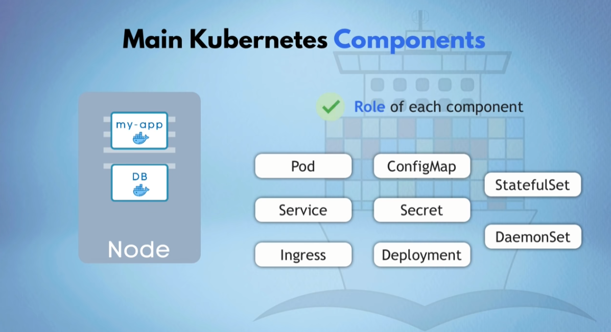

Kubernetes
What is Kubernetes ?
- Open Source container* orchestration tool*
- Helps manage containerized applications in different deployment environments (VM, cloud, ... )
- Service discovery and load balancing
- Automated rollouts and rollbacks
- Self-healing
- Auto scaling
- Storage orchestration
Why do we need container orchestration tools ?
- Trend from Monolith to Microservices
- Increased usage of containers
- Demand for a proper way of managing those hunderds of containers
What features do orchestration tools offer ?
- High availability or no downtime
- Scalability (up and down depanding on the demand) or high performance
- * Disaster recovery* - backup and restore (application can restart from restored data)
Architecture

Master Node > Worker nodes (different containers from application deployed/running)
Worker Nodes have most resources, high workload
Master node is more important than worker node because if you lose worker node you can start up a new one but if master node goes down, you can't access the cluster anymore. That's why in production environment you have at least two masters in Kuberneter cluster.
Worker node :
- Kubelet proces runs on (worker) node :
- needed for communication within the cluster
- scheduler on worker node itself : starting/stopping/maintaining application container with instructions from the controle plane
- collects performance and health information of node, pods and containers
- Kube-proxy
- Network proxy
- Manages virtual IP addresses of pods/services
- works as load balancer for services running on a node
- Pod
= running application container
*todo is control plane multiple master nodes or are there multiple control planes ? *
Master node = Control Plane
(different kubernetes processes : )
- API server : entrypoint to K8s cluster, all nodes (worker and master) are linked to this API and use it to communicate
- Controller Manager : keeps track of whats happening in the cluster : cluster needs repair, cluster restart needed, ... and registers nodes.
- Scheduler :
- ensure Pods placement based on the desired amount
- decides on which node the next container should be scheduled on based on available resources in the node and the needed resources for that container
- ectd :
- persistant and distributed key-value data store
- Kubernetes backing store
- current state and config of the entire cluster (node/...)
- backup restore is done using etcd snapshots
- Virtual Network : turns all the nodes in one unified machine
Kubernetes Objects
= persistent entities in K8s system.
These entities represent state of your cluster :
- what containerized applications are running (and on which node)
- resources available to those applications
- policies around how those applications behave, such as restart policies, upgrades, fault-tolerance
Kubernetes Object = record of intent - once created the Kubernetes system will constantly work to ensure that object exists. You're telling the K8s system what you want the cluster's workload to look like; this is your cluster's desired state.
What are the main Kubernetes Components ?

Pod :
- smallest unit in Kubernetes
- creates a layer around the container, you only communicate with the Kubernetes layer
- Usually *1 application *per pod
- each Pod get its own IP address (private IP)
- Pods are ephemeral !
New IP-address on re-creation (if you communicate using IP addresses you have to change it everytime Pod crashes/restarts)
Service and Ingress :
When program element needs to make use of the functions abstracted by the Service, it makes a request to the service, rather than an individual pod. The Service acts as a dispatcher, assigning a pod to handle the request.
- Service is also a loadbalancer and checks which pod (if is duplicated) has less load and can process the new request
- Permanent IP address attached to Pod
- Lifecycle of Pod and Service are not connected (IP Address Pod stays when crashes/restarts)
- set of Pods targeted by a Service is (usually) determined by Label Selector
- Type of service :
- External Service : connect to outside sources without opening own application to it
- Internal Service : default type
- Ingress
- External Service gives unsecure IP address > you need Ingress to make it secure and use a webaddress instead of a IP address
- Routes traffic based on request rules configured
- Deploy a Controller (like nginx)
- Deploy Resources
- (tip : use Rancher to deploy Ingress Controllers and Resources with it's UI)
- diffcult to setup in howest context with it's firewalls.
A client never connects to a container, but to a Pod, through a Service.
ConfigMap and Secret :

External Configuration of your application with
- ConfigMap :
- Is for non-confidential data only ! (not secure for passwords)
- Secret :
- used to store secret data
- stored in base64
- encryption should be done by third party tools in Kubernetes
- Decouple config from hard-coded environment variables
- You can use ConfigMap/Secret info as environment variables/properties file
- example:
- different config for dev, staging, prod environment
- storing passwords and using it in your applications
Volume
Data storage
If db data is stored on pod than data is lost when pod crashes
Connects physical storage (local or external remote/cloud storage - outside kubernetes cluster) to your pod
Kubernetes doesn't manage data persistance!
- PersistentVolumes
- define a storage volumes in the cluster
- Independent lifecycle
- otherwise : ephemeral data inside the pods (= if pod dies, data is gone)
- PersistentVolumeClaims
- Requests to obtain acess to a PersistentVolume
- Volumes will be mounted to a pod
Deployment & StatefulSet

To have no downtime (if application pod crashes/unavailable) node are duplicated but are linked to same service. Pod are duplicated using blueprints and you specify how many replicas you want to run.
- In practice you don't work with pods but with Deployments.
- Deployments are abstraction of Pods
- Deployment is a YAML object
- with Deployments you can define how many duplicates (replicas) you want running based on blueprint of Pod.
- you define the number of replicas you want to have running in the cluster via a ReplicaSet (which is part of the deployment object)
- DaemonSets ensure that all (or some) Nodes run a copy of a Pod.
As nodes are added to the cluster, Pods are added to them. As nodes are removed from the cluster, those Pods are garbage collected. Deleting a DaemonSet will clean up the Pods it created. example: cluster storage daemon (glusterd, ceph) on each node, logs collection daemon one every node (fluentd, filebeat) - DB can't be replicated via Deployments ! > because DB has state (=data)
StatefulSet is for replication of DB/StateFUL applications (Mongodb, MySQL, ...)
In practice DB are often hosted outside of Kubernetes Cluster because it isn't easy to setup.
todo difference replicaset vs daemonset
Load balancer

- L4 (TCP)
- Only available on Cloud Providers
- L7 Load balancing
- Ingress = load balancing option Kubernetes provides
- Can redirect traffic to specific workloads based on request
Kube-proxy
- (small) load distribution
- default : randomly route to Ip address based on iptables
Autoscaler - HPA - horizontal pod autoscaler

- min and max number of replicas
- metric to monitor and base scaling decisions on, such as CPU usage
- HPA checks every 30 seconds
Setting up Kubernetes Cluster

In the configuration you tell what you want and Kubernetes tries to meet those requirements.

Deployment and Service Configuration file :
- apiversion : which version of the Kubernetes API you're using to create this object
- kind : what kind of object you want to create
- metadata : data that helps uniquely identiy the object (name string, UID, optional namespace)
- specification : what state you desire for the object
- attributes of spec are specific to the kind of component
- spec > selector > matchLabels should be the same as spec > template > metadata > labels
- replicas : amount of pods to start up with this template
- status > automatically generated and added by Kubernetes

K8s compares status constantly > if difference takes action
Where does K8S get status data ?

K8s gets it from etcd which holds current status of any K8s component.
Format of the configuration file = yaml > store the config files with your code (or own git repo for config files)
Helm
What is Helm ?
Helm is an application package management registry for Kubernetes.
To package YAML files and distribute them in public and private repositories.Helm charts are pre-configured software application resources you can download (Helm repository) and deploy in your Kubernetes environment. (= bundle of YAML files) You can create custom Helm charts.
You can (re)use existing Helm Charts for Database Apps (Mongodb, ElasticSearch, ...) or Minitoring Apps (Prometheus)

How to look for Helm charts ?
helm search <keyword>- Helm hub: https://hub.helm.sh/
- Helm charts GitHub Project: https://github.com/helm/charts
Features
Templating Engine
- define a common blueprint
- dynamic {{values}} in template file are replaced by placeholders
- advantage :
- you have less yaml files to maintain
- Practical for CI/CD : In your build you can replace the values on the fly


Use Case for Helm features : deploy same applications accross different environments (dev, staging, production).

Helm Chart Structure

helm install <chartname>
Value injection into template files

You can change values using a my-values.yaml file

You can also change it manually in the command line

Release management
V2
Client (Helm CLI) - Server (Tiller)
When you helm install chart the client will send the requests to Tiller.
Tiller will store all versions of the helm chart. The changes are applied to existing deployment instead of creating a new one.
You can also rollback the upgrade (helm rollback.)


Downside of Tiller :
- Tiller has too much power inside of K8s cluster (create, delete, update components) > too much permissions
- Security issue
V3
Tiller is removed because of security issue in V2

Rancher
What is Rancher ?
Rancher is a complete software stack for teams adopting containers.
It addresses operational and security challengers for managing multiple Kubernets clusters, while providing DevOps teams with integrated tools for running containerized workloads.
- simple/intuitive UI to get started with Kubernetes
- multi-cloud and hybrid-cloud Kubernetes solutions
- fast way to set up on-premises Kubernetes clusters
- includes CI/CD pipelines for DevOps operations

Minikube and Kubectl
How to test on local machine ? With Minikube where master and worker processes work on one node with docker container preinstalled.
Kubectl = command line tool for K8s which communicates through API server of the K8s cluster
How to get own application in Kubernetes


What we learned